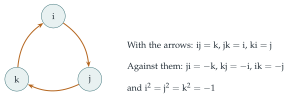

STEP III 1993, Question 5
Read the question before you go on. It is in the STEP Support Programme’s question database: step.maths.org/questions/93-s3-q5
The hook
On 16 October 1843, walking along the Royal Canal in Dublin with his wife, William Rowan Hamilton had a flash of inspiration that he had been chasing for years. He had been trying to multiply triples of numbers, the way complex numbers multiply pairs, and failing. The answer, he suddenly saw, needed four numbers, and a multiplication in which the order matters: \(ij \neq ji\). He carved the rules into the stone of Brougham Bridge: \[\mathrm{i}^2 = \mathrm{j}^2 = \mathrm{k}^2 = \mathrm{ijk} = -1.\] These are the quaternions. The question builds them from pairs of complex numbers, and finds inside them a small group of eight elements with a twisted multiplication. Quaternions are now used to describe rotations in three dimensions in every computer game, flight simulator and spacecraft guidance system.
Before you start
For the group definitions, see Section 6.6. Two more words: the order of an element \(g\) of a group is the smallest positive \(n\) with \(g^n = e\); and two groups are isomorphic if there is a one-to-one correspondence between them that respects the operations, so that they are “the same group with different labels”.
Think of the pair \((z_1, z_2)\) as standing for a “number” \(z_1 + z_2\mathrm{j}\), where \(\mathrm{j}\) is a new symbol with \(\mathrm{j}^2 = -1\) and \(\mathrm{j}w = w^*\mathrm{j}\) for complex \(w\). Multiply \((z_1 + z_2\mathrm{j})(w_1 + w_2\mathrm{j})\) using these rules. Do you get the formula for \(\circ\)?
\((z_1 + z_2\mathrm{j})(w_1 + w_2\mathrm{j}) = z_1w_1 + z_1w_2\mathrm{j} + z_2\mathrm{j}w_1 + z_2\mathrm{j}w_2\mathrm{j} = z_1w_1 + z_1w_2\mathrm{j} + z_2w_1^*\mathrm{j} + z_2w_2^*\mathrm{j}^2\), which is \((z_1w_1 - z_2w_2^*) + (z_1w_2 + z_2w_1^*)\mathrm{j}\). Yes: the operation \(\circ\) is quaternion multiplication in disguise.
Working it through
Stage 1 Associativity via matrices
Checking \((a \circ b) \circ c = a \circ (b \circ c)\) directly is a long calculation. There is a slicker way.
Associate to \((z_1, z_2)\) the complex matrix \(M = \begin{pmatrix} z_1 & z_2 \\ -z_2^* & z_1^* \end{pmatrix}\). What is the top row of the matrix product \(M(z_1, z_2)\,M(w_1, w_2)\)?
The top row of the product is \(\bigl(z_1w_1 - z_2w_2^*,\ z_1w_2 + z_2w_1^*\bigr)\), exactly \((z_1, z_2)\circ(w_1, w_2)\), and the bottom row is \(\bigl(-(z_1w_2 + z_2w_1^*)^*,\ (z_1w_1 - z_2w_2^*)^*\bigr)\), so the product has the same special form. So \(M(a \circ b) = M(a)M(b)\). Matrix multiplication is associative, and \(M\) is one-to-one (you can read off \(z_1\), \(z_2\) from the top row), so \(\circ\) is associative.■
Stage 2 Not commutative
\((0, 1)\circ(\mathrm{i}, 0) = (0 \cdot \mathrm{i} - 1 \cdot 0,\ 0 \cdot 0 + 1 \cdot \mathrm{i}^*) = (0, -\mathrm{i})\), but \((\mathrm{i}, 0)\circ(0, 1) = (0, \mathrm{i})\). So \(\circ\) is not commutative.
The four special products follow directly from the definition: \[\begin{aligned} (z, 0)\circ(w, 0) &= (zw, 0), & (z, 0)\circ(0, w) &= (0, zw), \\ (0, z)\circ(w, 0) &= (0, zw^*), & (0, z)\circ(0, w) &= (-zw^*, 0). \end{aligned}\]
Stage 3 The group of eight
In quaternion notation, \(A = 1\), \(C = \mathrm{i}\), \(B = \mathrm{j}\), \(D = \mathrm{i}\mathrm{j} = \mathrm{k}\), and \(E, G, F, H\) are their negatives. Every element of \(S_1\) has the form \((u, 0)\) or \((0, u)\) with \(u \in \{1, \mathrm{i}, -1, -\mathrm{i}\}\).
Use the four special products to show that \(S_1\) is closed. What is the identity?
By the four special products, the product of two elements of the form \((u, 0)\) or \((0, u)\) is again of one of these forms, with first or second entry \(uv\), \(uv^*\) or \(-uv^*\). Since \(\{1, \mathrm{i}, -1, -\mathrm{i}\}\) is closed under multiplication, conjugation and negation, the product is in \(S_1\). The identity is \(A = (1, 0)\): \((1, 0)\circ(w_1, w_2) = (w_1, w_2)\) and \((w_1, w_2)\circ(1, 0) = (w_1, w_2)\).
Find the order and inverse of each element.
\(A\) has order \(1\). \(E\circ E = (-1, 0)\circ(-1, 0) = (1, 0)\), so \(E\) has order \(2\). For \(C = (\mathrm{i}, 0)\): \(C\circ C = (-1, 0) = E\), so \(C\) has order \(4\) and \(C^{-1} = C^3 = E\circ C = G\). For \(B = (0, 1)\): \(B\circ B = (-1 \cdot 1^*, 0) = (-1, 0) = E\), so \(B\) has order \(4\) and \(B^{-1} = F\). Similarly \(D\circ D = (-\mathrm{i}\cdot\mathrm{i}^*, 0) = (-\mathrm{i}\cdot(-\mathrm{i}), 0) = (-1, 0) = E\), so \(D\) has order \(4\) with inverse \(H\). And \(G\), \(F\), \(H\) are the inverses of \(C\), \(B\), \(D\), also of order \(4\). In summary:
| element | \(A\) | \(B\) | \(C\) | \(D\) | \(E\) | \(F\) | \(G\) | \(H\) |
|---|---|---|---|---|---|---|---|---|
| inverse | \(A\) | \(F\) | \(G\) | \(H\) | \(E\) | \(B\) | \(C\) | \(D\) |
| order | \(1\) | \(4\) | \(4\) | \(4\) | \(2\) | \(4\) | \(4\) | \(4\) |
With closure, associativity (Stage 1), an identity and inverses, \(S_1\) is a group.■ It is called the quaternion group \(Q_8\).
Stage 4 A subgroup
\(\{A, B, E, F\} = \{1, \mathrm{j}, -1, -\mathrm{j}\}\) consists of the powers of \(B\): \(B^1 = B\), \(B^2 = E\), \(B^3 = F\), \(B^4 = A\). So it is closed and contains inverses: a subgroup, cyclic of order \(4\). The matrix \(J = \begin{pmatrix} 0 & 1 \\ -1 & 0 \end{pmatrix}\) satisfies \(J^2 = -I\), \(J^3 = -J\), \(J^4 = I\), so it generates a cyclic group of order \(4\) too. Matching \(B^k \leftrightarrow J^k\) is an isomorphism.■ (Indeed \(J\) is exactly \(M(0, 1)\), the matrix of \(B\).)
Looking back
Represent by matrices. Associativity, painful to check directly, was inherited from matrix multiplication.
Find the structure behind a formula. The strange operation \(\circ\) was quaternion multiplication, and seeing that made everything easier.
Orders and inverses describe a group. The table of orders already shows \(Q_8\) is unusual: one element of order \(2\) and six of order \(4\).
What’s really going on
The real numbers form a one-dimensional number system in which you can add, multiply and divide; the complex numbers form a two-dimensional one. Hamilton’s quaternions are four-dimensional, and you can still divide, but multiplication is no longer commutative (Figure 6.7.1). In 1878 Ferdinand Frobenius proved that these three, \(\mathbb{R}\), \(\mathbb{C}\) and \(\mathbb{H}\) (for Hamilton), are the only finite-dimensional “division algebras” over the reals with associative multiplication. If you give up associativity but keep a size that multiplies, \(|xy| = |x|\,|y|\), as it does for real and complex numbers and quaternions, there is exactly one more: the eight-dimensional octonions, discovered by John Graves and Arthur Cayley in the 1840s. Adolf Hurwitz proved in 1898 that these four are the only such systems. (Without the condition on size there are other, stranger non-associative division algebras, but a deep theorem of 1958, due to Raoul Bott, John Milnor and Michel Kervaire, shows that every finite-dimensional real division algebra has dimension \(1\), \(2\), \(4\) or \(8\).)

Rotations in three dimensions
The quaternions of modulus \(1\) describe rotations of three-dimensional space: the rotation through angle \(\theta\) about a unit axis \(\mathbf{u}\) corresponds to \(q = \cos\frac\theta2 + \sin\frac\theta2(u_1\mathrm{i} + u_2\mathrm{j} + u_3\mathrm{k})\), acting on a vector \(\mathbf{v}\) (written as \(v_1\mathrm{i} + v_2\mathrm{j} + v_3\mathrm{k}\)) by \(\mathbf{v} \mapsto q\mathbf{v}q^{-1}\). Composing rotations is multiplying quaternions. This is more efficient and numerically stable than using matrices or angles, and it avoids “gimbal lock”, a loss of one degree of freedom that the Apollo astronauts had to work around with their gyroscope-based navigation. The half-angle \(\frac\theta2\) is also a clue to something deep: rotating by \(360^\circ\) gives \(q = -1\), not \(1\), a fact that physicists see in the behaviour of electrons (spin).
Four squares
The modulus of a quaternion is multiplicative, \(|pq| = |p||q|\), just like that of a complex number. Writing it out gives Euler’s four-square identity: a product of two sums of four squares is itself a sum of four squares. That is the key step in Lagrange’s theorem that every positive integer is a sum of four squares, which we prove in Section 7.8, the four-dimensional cousin of the two-squares result in Section 1.6.
The thinking skill
If an abstract operation is hard to reason about, find a concrete model, such as matrices, in which it becomes a familiar operation.
Properties like associativity then come for free. This idea, studying groups by representing them as matrices, grows into the large and beautiful subject of representation theory.
Try this next
Hamilton’s rules. Using the pairs, check that \(C\circ B = D\) and \(B\circ C = H\), that is, \(\mathrm{ij} = \mathrm{k}\) and \(\mathrm{ji} = -\mathrm{k}\).
Only one element of order \(2\). Show that \(E = -1\) is the only element of order \(2\) in \(Q_8\). Deduce that \(Q_8\) is not isomorphic to the group of symmetries of a square (which has five elements of order \(2\)).
Four squares. Show that \(\det M(z_1, z_2) = |z_1|^2 + |z_2|^2\). Using \(\det(M_1M_2) = \det M_1\det M_2\), deduce that a product of two sums of four squares is a sum of four squares.
Subgroups. Find all the subgroups of \(Q_8\). Show that every subgroup contains \(E\) unless it is \(\{A\}\), and that \(Q_8\) is the union of its three cyclic subgroups of order \(4\) (compare Section 6.6).
Further reading
John Conway & Derek Smith, On Quaternions and Octonions (A. K. Peters). The geometry and arithmetic of quaternions and octonions. Advanced but fascinating.
John Baez, “The octonions”, Bulletin of the American Mathematical Society 39 (2002); also freely available online. A wonderful survey; the introduction is readable now.
Andrew Hanson, Visualizing Quaternions (Morgan Kaufmann). Quaternions for rotations, with applications to graphics.